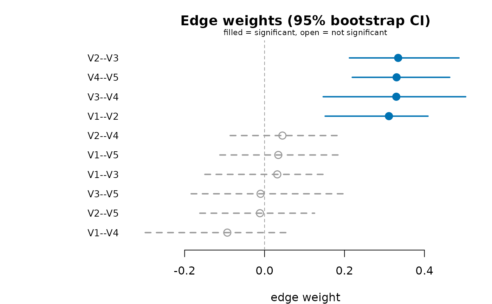
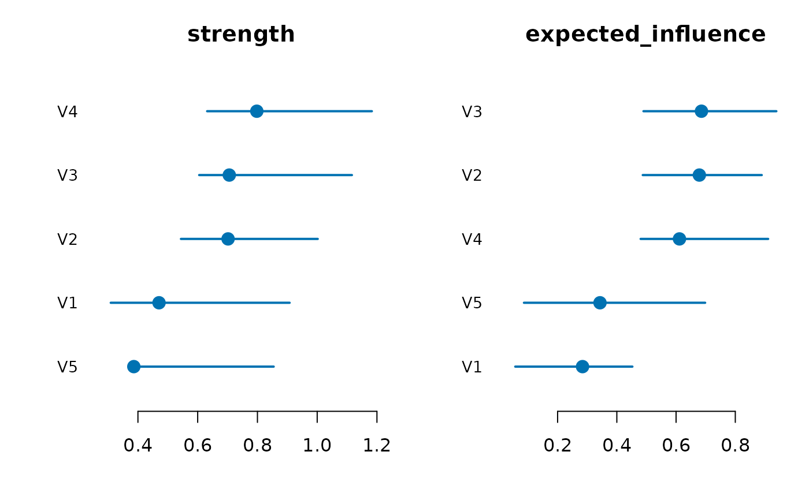

Resamples observations with replacement, re-estimates the network on each
resample, and summarizes the sampling distribution of every edge weight and
node centrality (mean, percentile confidence interval, and edge inclusion
proportion). An edge is flagged significant when its percentile interval
excludes zero. The raw per-resample draws are stored on the returned object
for use by difference_test().
Usage
net_boot(
data,
method = "glasso",
n_boot = 1000L,
ci = 0.95,
measures = c("strength", "expected_influence"),
centrality_fn = NULL,
predictability = FALSE,
threshold = FALSE,
diff_test = FALSE,
p_adjust = "none",
labels = NULL,
cores = NULL,
engine = NULL,
estimator_args = list(),
...
)
# S3 method for class 'psychnet_bootstrap'
as.data.frame(
x,
row.names = NULL,
optional = FALSE,
...,
what = c("edges", "centrality", "predictability", "thresholded"),
significant = FALSE
)
# S3 method for class 'psychnet_bootstrap'
print(x, ...)
# S3 method for class 'psychnet_bootstrap'
plot(
x,
type = c("edges", "centrality", "edge_diff", "centrality_diff", "predictability"),
measure = NULL,
...
)Arguments
- data
Data frame or matrix (rows = observations). Resampled exactly as given – factor columns and incomplete rows included – so each draw is handed to the estimator as the full data would be, and the estimator's own
na_methodand type handling apply per draw. Formethod = "mgm"node types are decided once on the full data and pinned for every draw.- method
Estimator (see
psychnet()). Default"glasso".- n_boot
Number of bootstrap resamples. Default 1000.
- ci
Confidence level for percentile intervals: a single number in (0, 1). Default 0.95.
- measures
Centrality measures to bootstrap. Defaults to the two recommended for psychometric networks (
"strength","expected_influence");"betweenness"/"closeness"and custom measures (viacentrality_fn) are also accepted. Seenet_centralities().- centrality_fn
Optional function supplying any non-built-in
measures(seenet_centralities()).- predictability
Logical; if
TRUEand the estimator returns a precision matrix (GGM family), bootstrap node predictability (R^2) and report its interval (as.data.frame(x, what = "predictability")). DefaultFALSE.- threshold
Logical; if
TRUE, also return the observed network with every edge whose bootstrap interval includes zero set to zero (as.data.frame(x, what = "thresholded")). DefaultFALSE.- diff_test
Logical; if
TRUE, also store two-sided bootstrap difference p-value matrices for edges (NULLpast 500 edges) and for each centrality measure, drawn byplot(x, type = "edge_diff")/"centrality_diff". For the tidy pairwise table usedifference_test(). DefaultFALSE.- p_adjust
Multiple-comparison adjustment applied to the difference p-value matrices (any stats::p.adjust method). Default
"none".- labels
Optional node labels.
- cores
Number of CPU cores for the resample loop:
NULL(default) uses two thirds of the detected cores; a whole number>= 1sets it (1forces a serial run). Parallelism uses forking (parallel::mclapply) and falls back to serial on Windows. Because every resample index is drawn in the parent process before any fitting, and a failing resample is caught inside its own worker, the result is identical for any number of cores and reproducible fromset.seed().- engine
Optional estimator engine forwarded to each resample fit (e.g.
"base"/"glasso"for glasso,"base"/"glmnet"for ising/mgm).NULL(default) uses the estimator's own default.- estimator_args
Named list of estimator arguments.
threshold,ci,measuresandlabelsare arguments of the bootstrap itself, so an estimator's ownthresholdmust go here, e.g.estimator_args = list(threshold = TRUE). Values here override matching arguments in....- ...
Passed to the estimator by
net_boot(); ignored by the methods.- x
A
psychnet_bootstrapobject.- row.names, optional
Ignored (S3 consistency).
- what
For
as.data.frame(): which table to return –"edges"(default),"centrality","predictability"(needspredictability = TRUE) or"thresholded"(needsthreshold = TRUE).- significant
For
as.data.frame()withwhat = "edges": ifTRUE, return only the edges whose confidence interval excludes zero. DefaultFALSE(all edges).- type
For
plot(): one of"edges"(default; the edge-weight intervals sorted by observed weight, bootnet's edge-accuracy plot),"centrality"(one sorted interval panel per measure),"edge_diff"and"centrality_diff"(the bootstrapped difference "significance box" matrix for edges or for one centrality), or"predictability"(node predictability intervals; needspredictability = TRUE).- measure
For
plot()withtype = "centrality"or"centrality_diff": which measure(s) to draw. Default: all bootstrapped measures ("centrality") or the first ("centrality_diff").
Value
net_boot() returns an object of class psychnet_bootstrap, read
with as.data.frame(), print(), plot() and difference_test().
as.data.frame(x) (what = "edges") returns one row per edge with
columns from, to, observed, mean (bootstrap mean), lower,
upper (percentile interval), prop_nonzero (share of resamples in which
the edge is nonzero) and significant (interval excludes zero). For a
directed estimator each ordered pair is its own row.
what = "centrality" returns one row per node: node, then for each
bootstrapped measure its observed value and the <measure>_lower /
<measure>_upper percentile interval.
what = "predictability" returns one row per node: node, value
(observed R^2), lower, upper.
what = "thresholded" returns one row per edge: from, to,
observed, weight (the observed weight, or 0 when its interval includes
zero) and retained.
Asking for a table that was not computed is a psychnet_bad_input error.
print() returns x invisibly after printing the method, the number of
resamples, the interval level, and the counts of edges, significant edges
and nodes. plot() returns x invisibly.
Details
For an estimator whose edge weights are non-negative by construction
(method = "relimp", whose weights are R^2 shares) a percentile interval
excludes zero almost surely, so significant is TRUE for every edge and
carries no information; threshold = TRUE then removes nothing. Both
threshold = TRUE and as.data.frame(x, significant = TRUE) raise a
psychnet_uninformative_test warning in that case. Pairwise difference
tests (difference_test(), diff_test = TRUE) remain meaningful.
A resample whose fit (or centrality, or predictability) errors is recorded
as failed inside its worker, so the result is the same for any number of
cores; failures raise one psychnet_resample_failed warning that carries
the first error message, and fewer than two successful resamples is a
psychnet_resample_failed error. An error in the observed fit is raised as
a psychnet_estimation_failed error with the estimator's own message.
Functions
as.data.frame(psychnet_bootstrap): A tidy table: the edges (default), the centrality intervals, the predictability intervals, or the thresholded network (seewhat).print(psychnet_bootstrap): Method, resamples, interval level and edge counts.plot(psychnet_bootstrap): Edge, centrality, difference or predictability intervals (seetype). Significant edges are filled points on solid segments, non-significant ones open points on dashed segments.
References
Epskamp, S., Borsboom, D., & Fried, E. I. (2018). Estimating psychological networks and their accuracy: A tutorial paper. Behavior Research Methods, 50(1), 195-212. doi:10.3758/s13428-017-0862-1
Examples
set.seed(1)
x <- matrix(stats::rnorm(150 * 5), 150, 5) %*% chol(0.4^abs(outer(1:5, 1:5, "-")))
colnames(x) <- paste0("V", 1:5)
# method = "pcor" keeps this example fast; the "glasso" default (and
# n_boot >= 1000) is what a real analysis should use.
bs <- net_boot(x, method = "pcor", n_boot = 50, cores = 1)
bs
#> <psychnet_bootstrap> pcor, 50 resamples, 95% CI
#> 10 edges (4 significant), 5 nodes, measures: strength, expected_influence
as.data.frame(bs)
#> from to observed mean lower upper prop_nonzero
#> 1 V1 V2 0.31118543 0.298237891 0.15159446 0.40899218 1
#> 2 V1 V3 0.03185023 0.033387300 -0.14933331 0.15793256 1
#> 3 V2 V3 0.33426443 0.337131826 0.21222203 0.48649315 1
#> 4 V1 V4 -0.09321933 -0.099159232 -0.29858901 0.06030023 1
#> 5 V2 V4 0.04470097 0.034035886 -0.08595976 0.19118623 1
#> 6 V3 V4 0.32962441 0.338115084 0.14664746 0.50321968 1
#> 7 V1 V5 0.03435117 0.038882968 -0.11179003 0.19742845 1
#> 8 V2 V5 -0.01153139 -0.006380471 -0.16191974 0.12517682 1
#> 9 V3 V5 -0.01001689 -0.017513993 -0.18367088 0.20086310 1
#> 10 V4 V5 0.33034659 0.360416525 0.21937671 0.46332468 1
#> significant
#> 1 TRUE
#> 2 FALSE
#> 3 TRUE
#> 4 FALSE
#> 5 FALSE
#> 6 TRUE
#> 7 FALSE
#> 8 FALSE
#> 9 FALSE
#> 10 TRUE
as.data.frame(bs, significant = TRUE)
#> from to observed mean lower upper prop_nonzero significant
#> 1 V1 V2 0.3111854 0.2982379 0.1515945 0.4089922 1 TRUE
#> 2 V2 V3 0.3342644 0.3371318 0.2122220 0.4864931 1 TRUE
#> 3 V3 V4 0.3296244 0.3381151 0.1466475 0.5032197 1 TRUE
#> 4 V4 V5 0.3303466 0.3604165 0.2193767 0.4633247 1 TRUE
as.data.frame(bs, what = "centrality")
#> node strength strength_lower strength_upper expected_influence
#> 1 V1 0.4706062 0.3089894 0.907735 0.2841675
#> 2 V2 0.7016822 0.5439371 1.001855 0.6786194
#> 3 V3 0.7057560 0.6049353 1.116255 0.6857222
#> 4 V4 0.7978913 0.6316038 1.182999 0.6114526
#> 5 V5 0.3862460 0.4024386 0.854440 0.3431495
#> expected_influence_lower expected_influence_upper
#> 1 0.05695078 0.4525569
#> 2 0.48748685 0.8893284
#> 3 0.48989974 0.9386692
#> 4 0.48030709 0.9109487
#> 5 0.08638032 0.6981966
plot(bs) # edge-weight CIs

plot(bs, type = "centrality") # centrality CIs
